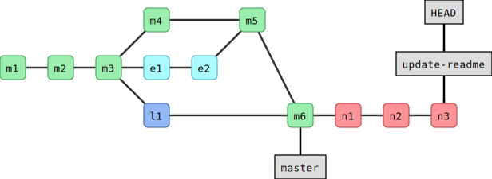

We typically need at least one version of the code to “work” (to compile, to give expected results, …).
At the same time we work on new features, often several features concurrently.
Often they are unfinished.
We need to be able to separate different lines of work really well.
The strength of version control is that it permits the researcher to isolate
different tracks of work, which can later be merged to create a composite
version that contains all changes:
Main line development is often called master or main.
Other than this convention there is nothing special about master or main, it is just a branch.
Commits form a directed acyclic graph (we have left out the arrows to avoid confusion about the time arrow).
A group of commits that create a single narrative are called a branch.
There are different branching strategies, but it is useful to think that a branch
tells the story of a feature, e.g. “fast sequence extraction” or “Python interface” or “fixing bug in
matrix inversion algorithm”.
An important alias
We will now define an alias in Git, to be able to nicely visualize branch
structure in the terminal without having to remember a long Git command
(more details about aliases are given
in a later section). This is extensively used in the rest of this
and other lessons:
We do the following part together. Encourage participants to type along.
Let’s create a branch called experiment where we add cilantro to ingredients.txt.
$ gitbranchexperimentmaster# creates branch "experiment" from master$ gitcheckoutexperiment# switch to branch "experiment"$ gitbranch# list all local branches and show on which branch we are
Verify that you are on the experiment branch (note that gitgraph also
makes it clear what branch you are on: HEAD->branchname):
$ gitbranch
* experiment master
Then add 2 tbsp cilantro on top of the ingredients.txt:
Stage this and commit it with the message “let us try with some cilantro”.
Then reduce the amount of cilantro to 1 tbsp, stage and commit again with “maybe little bit less cilantro”.
We have created two new commits:
$ gitgraph
* 6feb49d (HEAD -> experiment) maybe little bit less cilantro* 7cf6d8c let us try with some cilantro* dd4472c (master) we should not forget to enjoy* 2bb9bb4 add half an onion* 2d79e7e adding ingredients and instructions
The branch experiment is two commits ahead of master.
In this exercise, you will create another new branch and few more commits.
We will use this in the next section, to practice
merging. The goal of the exercise is to end up with 3 branches.
Change to the branch master.
Create another branch called less-salt
Note! makes sure you are on master branch when you create the less-salt branch
A safer way would be to explicitly mention to create from the master branch
as shown below:
$ gitbranchless-saltmaster
Where you reduce the amount of salt.
Commit your changes to the less-salt branch.
Use the same commands as we used above.
We now have three branches (in this case HEAD points to less-salt):
$ gitbranch
experiment* less-salt master$ gitgraph
* bf59be6 (HEAD -> less-salt) reduce amount of salt| * 6feb49d (experiment) maybe little bit less cilantro| * 7cf6d8c let us try with some cilantro|/* dd4472c (master) we should not forget to enjoy* 2bb9bb4 add half an onion* 2d79e7e adding ingredients and instructions
Here is a graphical representation of what we have created:
Now switch to master.
Add and commit the following README.md to master:
# Guacamole recipe
Used in teaching Git.
Now you should have this situation:
$ gitgraph
* 40fbb90 (HEAD -> master) draft a readme| * bf59be6 (less-salt) reduce amount of salt|/| * 6feb49d (experiment) maybe little bit less cilantro| * 7cf6d8c let us try with some cilantro|/* dd4472c we should not forget to enjoy* 2bb9bb4 add half an onion* 2d79e7e adding ingredients and instructions
And for comparison this is how it looks on GitHub.
We do the rest as type-along. Instructors, encourage learners to type-along.
It turned out that our experiment with cilantro was a good idea.
Our goal now is to merge experiment into master.
If you got stuck in the above exercises or joined later
If you got stuck in the above exercises or joined later,
you can apply the commands below.
But skip this box if you managed to create branches.
$ cd..# step out of the current directory$ gitclonehttps://github.com/coderefinery/recipe-before-merge.git
$ cdrecipe-before-merge
$ gitcheckoutexperiment
$ gitcheckoutless-salt
$ gitcheckoutmaster
$ gitremoteremoveorigin
$ gitgraph
Or call a helper to un-stuck it for you.
First we make sure we are on the branch we wish to merge into:
$ gitbranch
experiment less-salt* master
Then we merge experiment into master:
$ gitmergeexperiment
We can verify the result in the terminal:
$ gitgraph
* c43b24c (HEAD -> master) Merge branch 'experiment'|\| * 6feb49d (experiment) maybe little bit less cilantro| * 7cf6d8c let us try with some cilantro* | 40fbb90 draft a readme|/| * bf59be6 (less-salt) reduce amount of salt|/* dd4472c we should not forget to enjoy* 2bb9bb4 add half an onion* 2d79e7e adding ingredients and instructions
What happens internally when you merge two branches is that Git creates a new
commit, attempts to incorporate changes from both branches and records the
state of all files in the new commit. While a regular commit has one parent, a
merge commit has two (or more) parents.
To view the branches that are merged into the current branch we can use the command:
$ gitbranch--merged
experiment* master
We are also happy with the work on the less-salt branch. Let us merge that
one, too, into master:
$ gitbranch# make sure you are on master$ gitmergeless-salt
$ gitgraph
* 4f00317 (HEAD -> master) Merge branch 'less-salt'|\| * bf59be6 (less-salt) reduce amount of salt* | c43b24c Merge branch 'experiment'|\ \| * | 6feb49d (experiment) maybe little bit less cilantro| * | 7cf6d8c let us try with some cilantro| |/* | 40fbb90 draft a readme|/* dd4472c we should not forget to enjoy* 2bb9bb4 add half an onion* 2d79e7e adding ingredients and instructions
Observe how Git nicely merged the changed amount of salt and the new ingredient in the same file
without us merging it manually:
If the same file is changed in both branches, Git attempts to incorporate both
changes into the merged file. If the changes overlap then the user has to
manually settle merge conflicts (we will do that later).
$ gitgraph
* 4f00317 (HEAD -> master) Merge branch 'less-salt'|\| * bf59be6 reduce amount of salt* | c43b24c Merge branch 'experiment'|\ \| * | 6feb49d maybe little bit less cilantro| * | 7cf6d8c let us try with some cilantro| |/* | 40fbb90 draft a readme|/* dd4472c we should not forget to enjoy* 2bb9bb4 add half an onion* 2d79e7e adding ingredients and instructions
Comparing figures “Commit graph after merge”
and “Commit graph after merged branches were deleted”,
we observe that
only the pointers (“sticky notes”) disappeared, not the commits.
Git will not let you delete a branch which has not been reintegrated unless you
insist using gitbranch-D. Even then your commits will not be lost but you
may have a hard time finding them as there is no branch pointing to them.
The following exercises are advanced, absolutely no problem to postpone them to a
few months later. If you give them a go, keep in mind that you might run into conflicts,
which we will learn to resolve in the next section.
(optional) Branch-2: Perform a fast-forward merge
Create a new branch from master and switch to it.
Create a couple of commits on the new branch (for instance edit README.md):

Now switch to master.
Merge the new branch to master.
Examine the result with gitgraph.
Have you expected the result? Discuss what you see.
Solution
You will see that in this case no merge commit was created and Git merged the
two branches by moving (fast-forwarding) the “master” branch (label) three
commits forward.
This was possible since one branch is the ancestor of the other and their
developments did not diverge.
A merge that does not require any merge commit is a fast-forward merge.
(optional) Branch-3: Rebase a branch (instead of merge)
As an alternative to merging branches, one can also rebase branches.
Rebasing means that the new commits are replayed on top of another branch
(instead of creating an explicit merge commit).
Note that rebasing changes history and should not be done on public commits!
Create a new branch, and make a couple of commits on it.
Switch back to master, and make a couple of commits on it.
Inspect the situation with gitgraph.
Now rebase the new branch on top of master by first switching to the new branch, and then gitrebasemaster.
Inspect again the situation with gitgraph. Notice that the commit hashes have changed - think about why!
Solution
You will notice two things:
History is now linear and does not contain merge commits.
All the commit hashes that were on the branch that got rebased, have
changed. This also demonstrates that gitrebase is a command that alters
history. The commit history looks as if the rebased commits were all done
after the master commits.
A tag is a pointer to a commit but in contrast to a branch it does not ever move.
We use tags to record particular states or milestones of a project at a given
point in time, like for instance versions (have a look at semantic versioning,
v1.0.3 is easier to understand and remember than 64441c1934def7d91ff0b66af0795749d5f1954a).
There are two basic types of tags: annotated and lightweight.
Use annotated tags since they contain the author and can be cryptographically signed using
GPG, timestamped, and a message attached.
It can be useful to think of branches as sticky notes and of tags as
commemorative plaques.
Let’s add an annotated tag to our current state of the guacamole recipe:
$ gittag-anobel-2021-m"recipe I made for the 2021 Nobel banquet"
As you may have found out already, gitshow is a very versatile command. Try this:
$ gitshownobel-2021
For more information about tags see for example
the Pro Git book chapter on the
subject.
$ gitcheckout-bnew-feature# create branch, switch to it$ gitcommit# work, work, work, ..., and test$ gitcheckoutmaster# once feature is ready, switch to master$ gitmergenew-feature# merge work to master$ gitbranch-dnew-feature# remove branch
Sometimes you have a wild idea which does not work.
Or you want some throw-away branch for debugging:
$ gitcheckout-bwild-idea# create branch, switch to it, work, work, work ...$ gitcheckoutmaster# realize it was a bad idea, back to master$ gitbranch-Dwild-idea# it is gone, off to a new idea
No problem: we worked on a branch, branch is deleted, master is clean.
Branch-4: Test your understanding
Which of the following combos (one or more) creates a new branch and makes a commit to it?
Both 2 and 3 would do the job. Note that in 2 we first stage the file, and then create the
branch and commit to it. In 1 we create the branch but do not switch to it, while in 4 we
don’t give the -b flag to gitcheckout to create the new branch.
Different meanings of “checkout”
Depending on the context gitcheckout can do very different actions:
Switch to a branch:
$ gitcheckout<branchname>
Bring the working tree to a specific state (commit):
$ gitcheckout<hash>
Set a file/path to a specific state (throws away all unstaged/uncommitted changes):
$ gitcheckout<path/file>
This is unfortunate from the user’s point of view but the way Git is implemented it makes sense.
Picture gitcheckout as an operation that brings the working tree to a specific state.
The state can be a commit or a branch (pointing to a commit).
In Git 2.23 (2019-08-16) and later this is much nicer:
$ gitswitch<branchname># switch to a different branch$ gitrestore<path/file># discard changes in working directory
Keypoints
A branch is a division unit of work, to be merged with other units of work.
A tag is a pointer to a moment in the history of a project.
{kind=link}